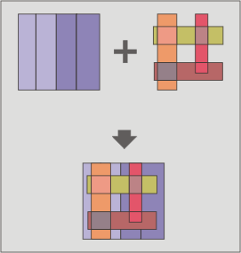

Unione (union)
Questo geoprocesso opera in base al confronto di due layer di poligoni, linee o punti (come nel caso dei geoprocessi "Intersezione" e "Differenza") e consente di ottenere la loro unione.
Il geoprocesso "Unione" è anche noto come "Spatial OR", in quanto il layer risultante sarà costituito dalle geometrie presenti in entrambi i layer in ingresso (intersezione), più le geometrie appartenenti esclusivamente ad uno o all'altro (differenza).
Ciò significa che il geoprocesso realizza ben tre operazioni: la prima per calcolare l'intersezione di entrambi i layer, la seconda per calcolare la differenza tra il primo e il secondo layer e, infine, la terza per calcolare la differenza tra il secondo e il primo layer.

Lo schema della tabella degli attributi del layer risultante conterrà tutti gli attributi di entrambi i layer di partenza.
Questo geoprocesso è utile nel caso in cui occorra generare nuovi layer che mostrino le occorrenze di due fenomeni, in modo da esaltare l'occorrenza di uno di essi (o di entrambi).
I risultati di unioni tra layer aventi differenti tipi di geometria sono:
L'unione tra un layer di poligoni e uno di punti restituisce come risultato un layer di punti e un altro di poligoni.
L'unione tra un layer di poligoni e uno di linee restituisce come risultato un layer di linee e un altro di poligoni.
L'unione tra due layer di linee restituisce come risultato un layer di linee e un altro di punti contenente le intersezioni tra i due layer di input.